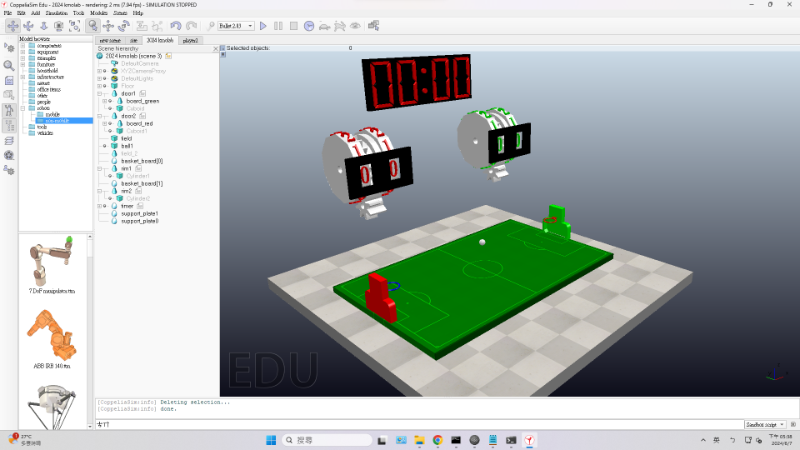

w15 <<
Previous Next >> w17
w16
本週為協同產品設計與實習第十六週
本周上課為填本分表單 https://docs.google.com/forms/d/e/1FAIpQLSduO5lTJtheYfoQEzIJPj8Ub6T7K2VdkTwIarz5_T7Ue1ECCg/viewform?pli=1
與繼續完成期末機器人設計、程式編寫與更改、模擬，場景球框得分錯誤更改 ; 檔案將上傳至github倉儲downloads下
更改player球員程式
from zmqRemoteApi import RemoteAPIClient
import keyboard
import math
import time
client = RemoteAPIClient('localhost', 23000)
print('Program started')
sim = client.getObject('sim')
# sim.startSimulation()
print('Simulation started')
v = 8
a = 40
# 選擇控制的球員
player = '/a_player1'
def setVelocity(lfwV, rfwV, lbwV, rbwV):
leftMotor1 = sim.getObject(player + '/joint_lf')
rightMotor1 = sim.getObject(player + '/joint_rf')
leftMotor2 = sim.getObject(player + '/joint_lb')
rightMotor2 = sim.getObject(player + '/joint_rb')
sim.setJointTargetVelocity(leftMotor1, lfwV)
sim.setJointTargetVelocity(rightMotor1, rfwV)
sim.setJointTargetVelocity(leftMotor2, lbwV)
sim.setJointTargetVelocity(rightMotor2, rbwV)
# 輸入四個變數分別給四個軸速度
def setangel(y):
ontology = sim.getObject(player)
angel = [-90 * math.pi / 180, y * math.pi / 180, 0 * math.pi / 180]
leftMotor = sim.getObject(player + '/joint_lf')
rightMotor = sim.getObject(player + '/joint_rf')
sim.setObjectOrientation(leftMotor, ontology, angel)
sim.setObjectOrientation(rightMotor, ontology, angel)
# 輸入一個變數改變前輪方向
def controlangel(y):
if keyboard.is_pressed('a'):
setangel(-y)
elif keyboard.is_pressed('d'):
setangel(y)
else:
setangel(0)
def setRotation(joint_name, target_angle):
joint = sim.getObject(player + joint_name)
current_angle = sim.getJointPosition(joint)
target_angle_radians = target_angle * math.pi / 180 # 將目標角度轉換為弧度
# 調整每一步的角度增量
step_size = 5 * math.pi / 180 # 每一步旋轉5度
steps = int(abs(target_angle_radians - current_angle) / step_size)
print(f'Current angle (radians): {current_angle}')
print(f'Target angle (radians): {target_angle_radians}')
print(f'Steps: {steps}')
# 平滑地移動到目標角度
for _ in range(steps):
if target_angle_radians > current_angle:
current_angle += step_size
else:
current_angle -= step_size
sim.setJointPosition(joint, current_angle)
time.sleep(0.01) # 小延遲以模擬平滑運動
if keyboard.is_pressed('q'): # 在過程中允許用戶終止操作
break
# 最後確保精確設置到目標角度
sim.setJointPosition(joint, target_angle_radians)
print(f'Set {joint_name} to angle {target_angle}')
def resetJointPosition(joint_name):
joint = sim.getObject(player + joint_name)
sim.setJointPosition(joint, 0)
print(f'Reset {joint_name} to 0')
def turnover():
floor = sim.getObject('/Floor')
player1 = sim.getObject(player)
a = sim.getObjectOrientation(player1, floor)
b = sim.getObjectPosition(player1, floor)
a[0] = 0
a[1] = 0
b[2] = 0.3
sim.setObjectPosition(player1, floor, b)
sim.setObjectOrientation(player1, floor, a)
def playercontrol(x, y):
if keyboard.is_pressed('w'):
setVelocity(x, x, x, x)
controlangel(y)
elif keyboard.is_pressed('s'):
setVelocity(-x, -x, -x, -x)
controlangel(y)
elif keyboard.is_pressed('a'):
setVelocity(-x, x, -x, x)
elif keyboard.is_pressed('d'):
setVelocity(x, -x, x, -x)
elif keyboard.is_pressed('space'):
turnover()
elif keyboard.is_pressed('q'):
# stop simulation
sim.stopSimulation()
elif keyboard.is_pressed('r'):
print('R key pressed')
setRotation('/joint_rf2', 45)
elif keyboard.is_pressed('f'):
print('F key pressed')
setRotation('/joint_rf2', 120)
elif keyboard.is_pressed('g'):
print('G key pressed')
setRotation('/joint_up', -200)
elif keyboard.is_pressed('h'):
print('H key pressed')
setRotation('/joint_up', 0)
else:
setVelocity(0, 0, 0, 0)
setangel(0)
while True:
if keyboard.is_pressed('shift'):
playercontrol(v + 4, a - 20)
else:
playercontrol(v, a)
更改進球後得分加錯記分板(將球門名稱更改)，與投進籃框後得5分(-36改成-179.9999)
footballcourt 場地

player 球員
site場景
操作影片
w15 <<
Previous Next >> w17